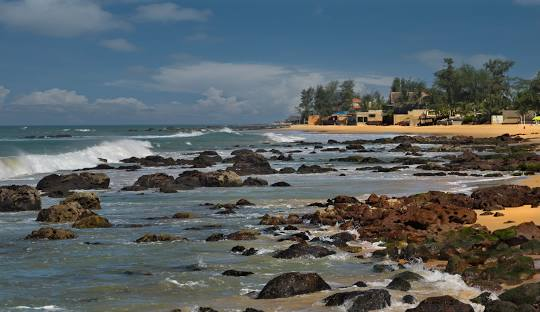
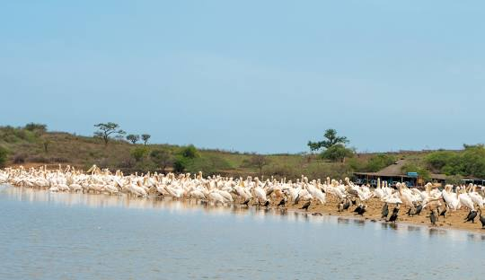
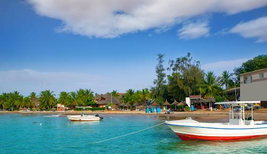
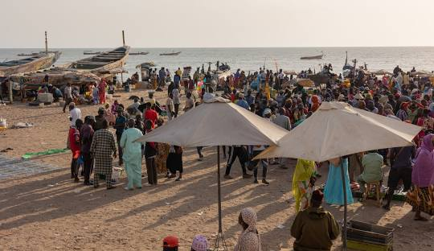
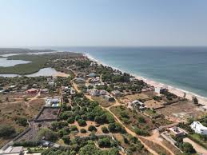
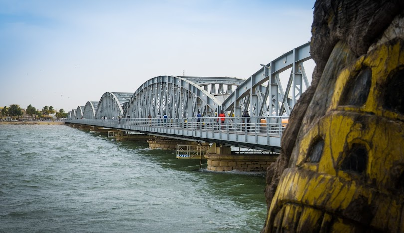
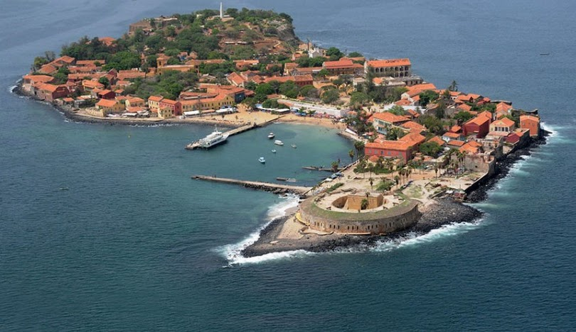
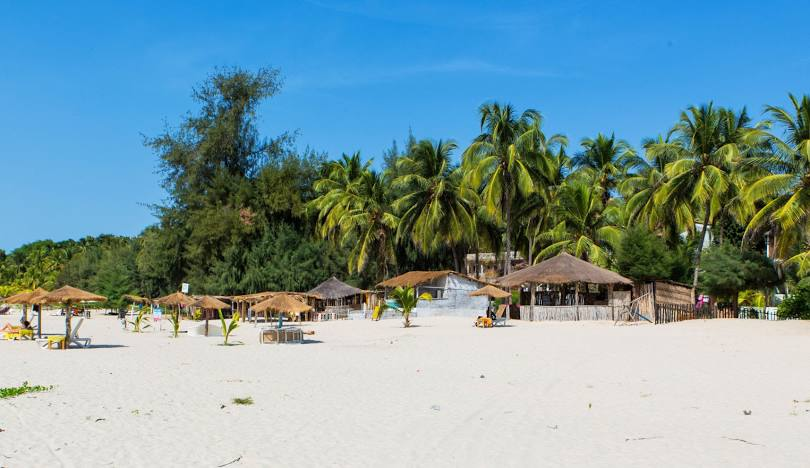
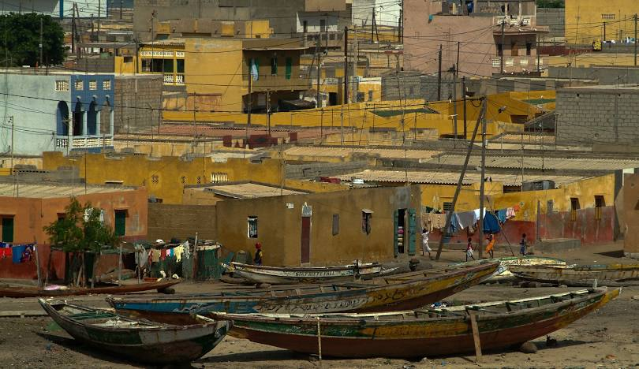
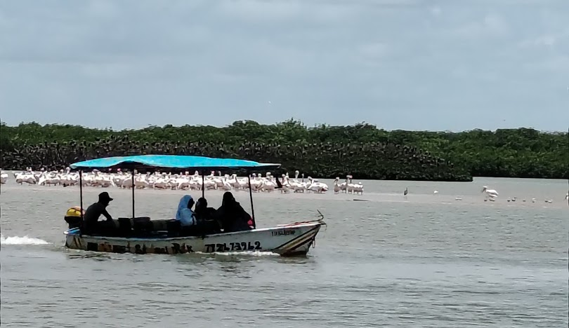

Découvrez le Sénégal authentique
Explorez les sites touristiques, hébergements et expériences uniques à travers tout le Sénégal
Destinations populaires au Sénégal

Ngaparou
Plage tranquille et authentique, idéale pour les familles et les amoureux de la nature.

Somone
Magnifique lagune et réserve ornithologique, paradis pour l'observation des oiseaux.

Saly
Station balnéaire réputée avec golfs, spas et activités nautiques pour tous les goûts.

Mbour
Port de pêche animé et marché traditionnel, immersion dans la vie locale sénégalaise.

Guereo
Village authentique au cœur du Sine-Saloum, expérience culturelle préservée.

Saint-Louis
Ancienne capitale de l'Afrique occidentale française, architecture coloniale préservée.

Dakar
Capitale dynamique, marché artisanal, île de Gorée et monuments historiques.

Cap Skiring
Plages de sable fin et cocotiers en Casamance, cadre paradisiaque préservé.
Filtrer les résultats
Résultats de recherche

Maison traditionnelle à Saint-Louis
Non disponibleSaint-Louis, Sénégal
Magnifique maison traditionnelle avec cour intérieure. Capacité 4 personnes. Propose des ateliers de cuisine locale.

Excursion en pirogue dans la mangrove
Non disponibleSaly, Sénégal
Découverte de la mangrove avec guide local. Durée 3h. Départ matinal pour observer les oiseaux.

Guide local expérimenté
Non disponibleCap Skirring, Casamance
Amadou, guide certifié depuis 10 ans, vous fait découvrir les secrets de la Casamance. Parle français et anglais.